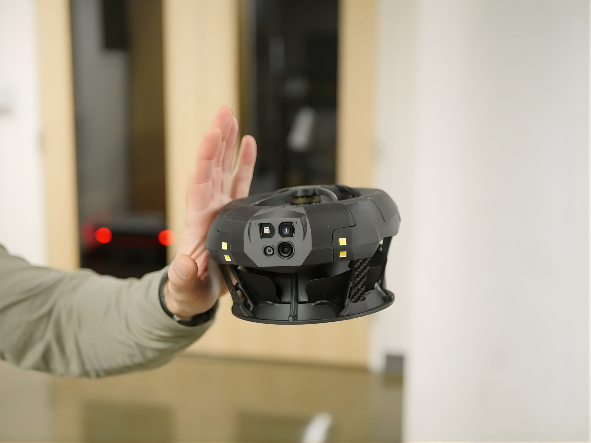
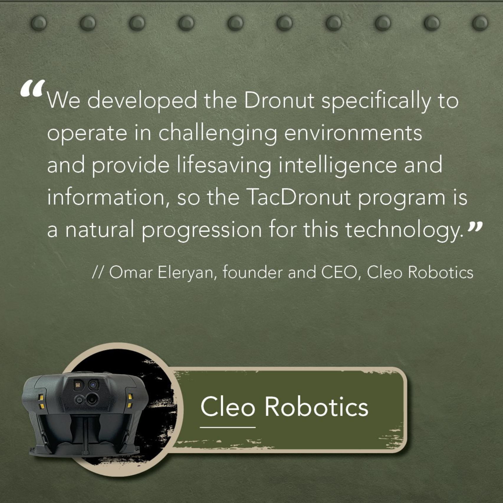
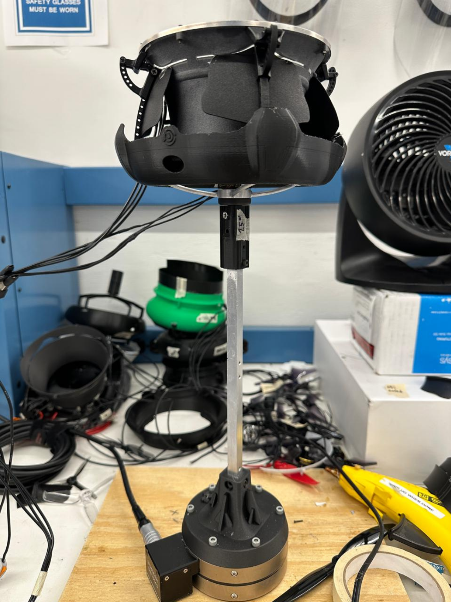
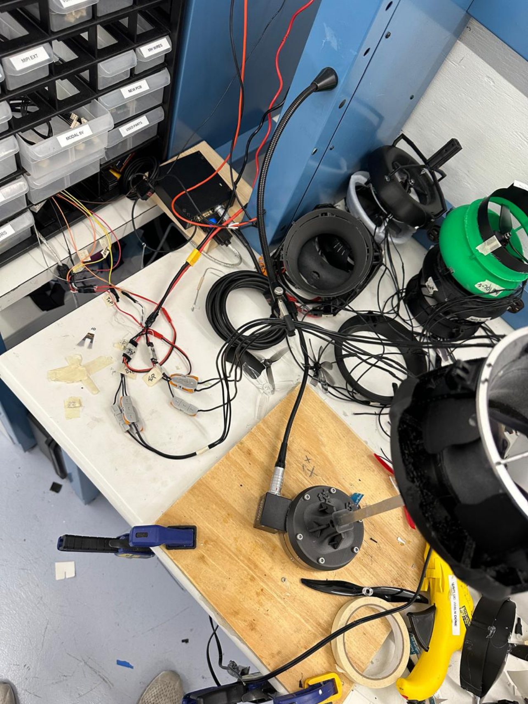
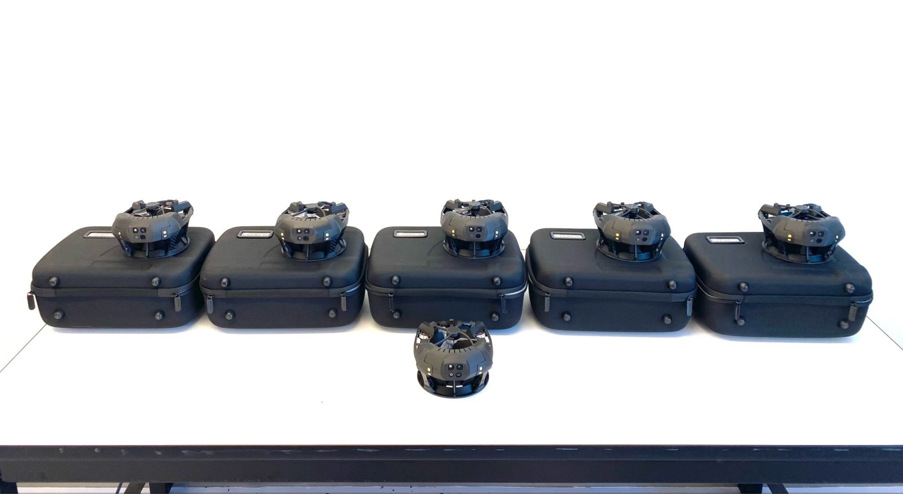
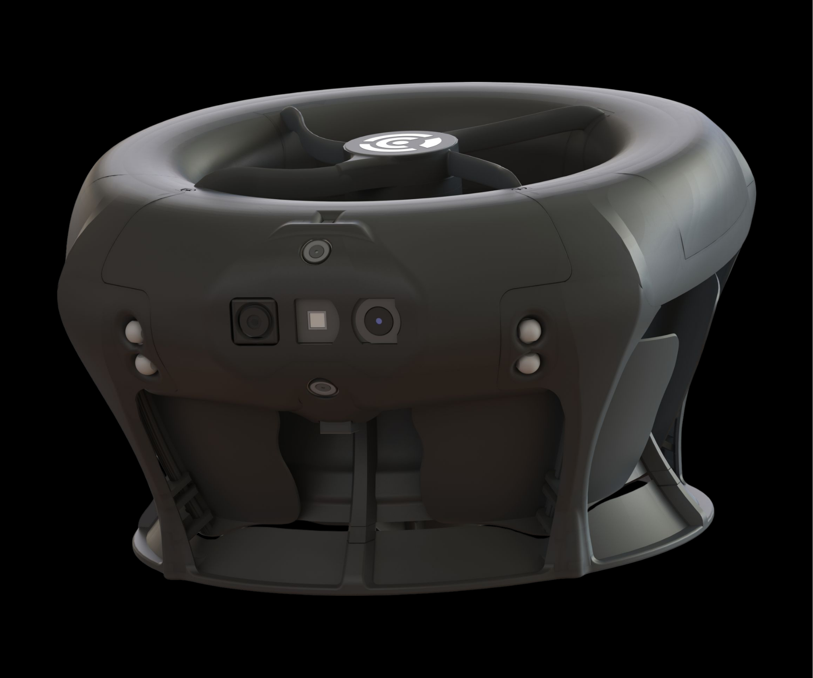
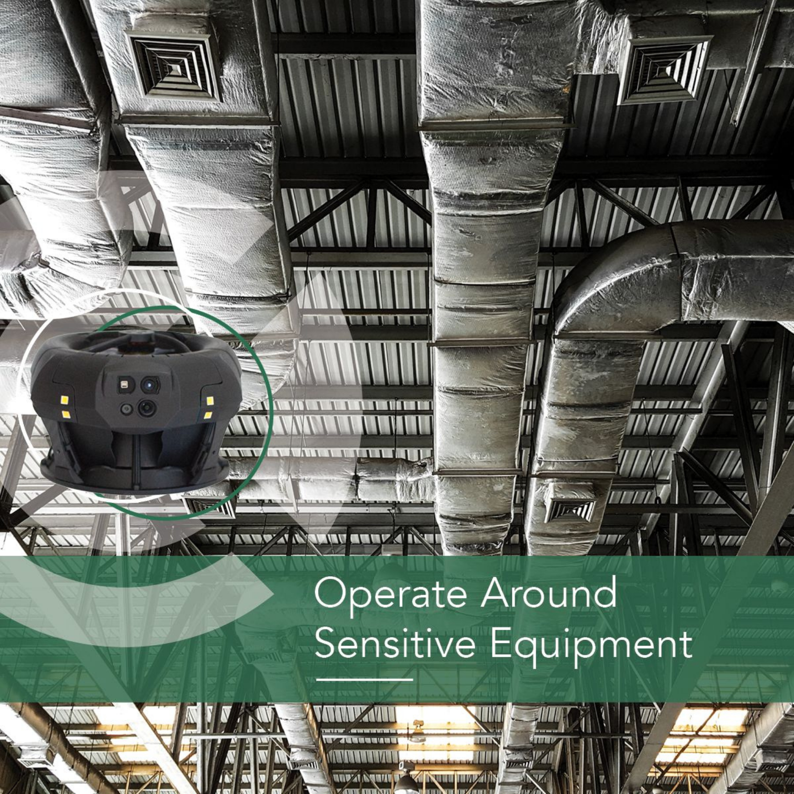
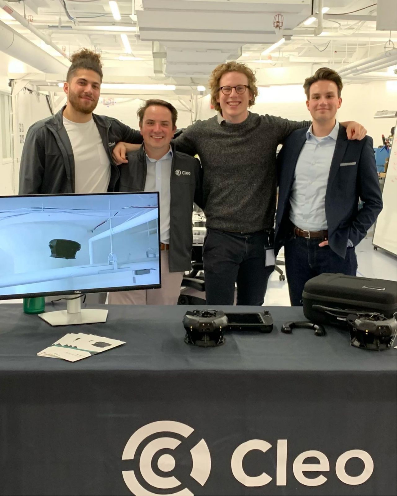

At CLEO Robotics, I had the opportunity to work on one of the world’s most unconventional
drones: the Dronut, a compact, single‑axis bi‑rotor UAV with a fully enclosed design.
My role focused on product design, prototyping, and manufacturing optimization, ensuring each
unit became lighter, stronger, and faster to assemble, all while maintaining aerospace‑grade
precision and reliability.
The Dronut was used by clients such as SpaceX, Chevron, and the U.S. Department of Defense,
requiring every iteration to meet rigorous performance and safety standards.
The core challenges were centered around weight reduction, structural strength, and assembly
efficiency.
We aimed to:
- Improve flight time through lighter materials and optimized geometry.
- Achieve a more stable and impact resistant frame capable of smoother flight.
- Streamline production and assembly, reducing build time without compromising quality.
Because of its unique coaxial, single‑axis design, the Dronut required continuous testing and
creative problem‑solving beyond conventional quadcopter frameworks.

Much of my work revolved around rapid prototyping and material experimentation.
I used carbon fiber–infused filaments and composite structures to achieve optimal
strength‑to‑weight ratios.
Working in CAD, I modified and redesigned existing component, from internal brackets to external
shells, making them both lighter and easier to manufacture.
I also operated CNC machining tools to fabricate carbon‑fiber body parts and tested new material
iterations and placement to balance stiffness, vibration control, and heat dissipation.
In collaboration with CFD engineers, I helped design and build test rigs to analyze aerodynamic
behaviour and measure forces under various blade geometries.
Since the Dronut’s internal ducted rotor system produced highly complex airflow, we relied
heavily on iterative testing and sensor‑based data collection to validate each
improvement.
Each iteration informed design refinements that reduced turbulence, improved stability, and
extended flight duration; key factors for both industrial and defence‑grade applications.


The original Dronut assembly process was intricate and time‑consuming, taking almost a full day
per unit due to the number of electronic, mechanical, and wiring components.
Through workflow re‑engineering, part redesign, and better component organisation, I streamlined
the process so that five complete drones could be assembled in a single day.
This involved:
- Simplifying cable routing and soldering layouts.
- Designing custom jigs and mounts for consistent alignment.
- Creating a parts inventory and storage system that tracked quantities, predicted shortages, and
automatically flagged reorder timelines.
This new system minimised downtime and ensured continuous production without material shortages,
which was crucial for maintaining supply to high‑profile clients.


By the end of my time at CLEO Robotics, the Dronut had evolved into a lighter, more efficient,
and more manufacturable platform, with significant gains in both performance and production
scalability.
Key Results:
- Increased flight time through weight optimisation.
- Reduced assembly time.
- Enhanced manufacturing consistency and workflow efficiency.
- Supported field deployment for industrial inspections and defence operations.
The project exemplified how engineering precision, iterative design, and manufacturing
innovation can converge to advance cutting‑edge robotics.


Problem: The Dronut required improvements in weight, durability, and production speed.
Method: Iterative redesigns in CAD, material testing with carbon composites, and end‑to‑end
manufacturing process optimisation.
Result: A lighter, stronger, faster‑to‑build drone used by some of the world’s most advanced
organisations.
Credits: Developed at CLEO Robotics, in collaboration with cross‑disciplinary teams in CFD, development, and manufacturing.